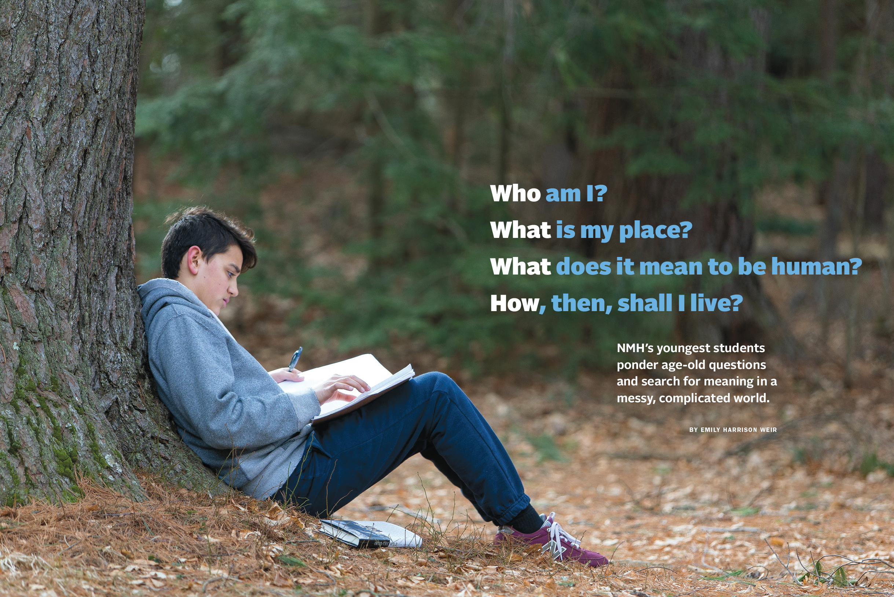
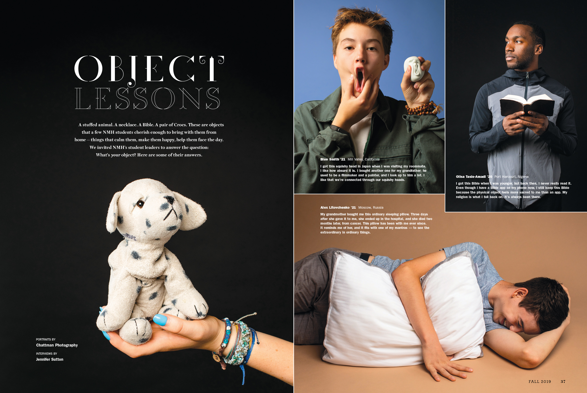
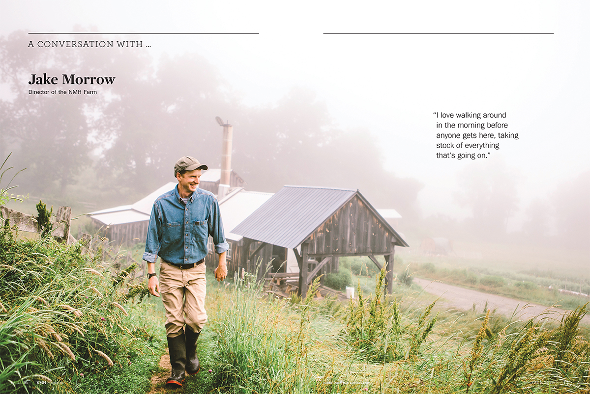

Explore the NMH Blog
Handling Decision Time in the College Process
If you would like to subscribe to the NMH Blog please click on the yellow bell icon above.

As graduation approaches, high school seniors are likely to feel a wide range of emotions.

Applying to college can be an intense and stressful process for everyone involved. NMH college counseling is there to support students and their families.

Interviewing can be a daunting process — sweaty palms go with the territory. Here are 10 tips to help you get the most from your boarding school interview.

Think about people who see a different side of you and could help reveal your personality and passion. Find teachers who can provide a unique point of view about you in the classroom.

Encourage your student to seek out and connect with adults in the community who can help guide students as they learn about independence.

Admission officers use essays to assess your writing skills and to compare your skills and potential with other applicants.

Your application is how you can showcase your skills and aptitude — how you demonstrate that you’ll be a valuable member of the team.

Thinking about sending your child to a private school? How do you find a school that’s the best fit?

How a New England independent boarding school cares for the health and well-being of its students.

How to master the boarding-school application process and get advice from admission professionals.

“Teaching Writing in a Remote Classroom: Meeting the Emotional Needs of Students,” by NMH faculty member John Corrigan, originally appeared on NAIS’s Independent Ideas blog on August 24, 2020.

Tips for both day and boarding students for making connections with peers and adults at school.

NMH’s youngest students ponder age-old questions and search for meaning in a messy, complicated world

A stuffed animal. A necklace. A Bible. A pair of Crocs. These are objects that a few NMH students cherish enough to bring with them from home — things that calm them, make them happy, help them face the day.
We invited NMH’s student leaders to answer the question:
What’s your object? Here are some of their answers

A conversation with Jake Morrow, director of the NMH Farm.